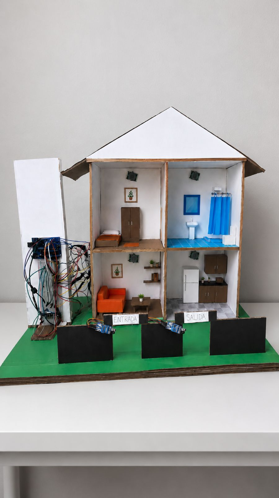

Problema
Contexto del proyecto
El reto consistía en construir una maqueta funcional que integrara automatización de habitaciones, aforo, alarma y visualización básica usando recursos limitados de Arduino UNO.
Caso de estudio
Sistema de vivienda inteligente en maqueta, desarrollado con Arduino UNO, sensores, luces, alarma y conteo de aforo.
Problema
El reto consistía en construir una maqueta funcional que integrara automatización de habitaciones, aforo, alarma y visualización básica usando recursos limitados de Arduino UNO.
Solución
Diseñé la lógica de control con sensores PIR para luces por habitación, sensores IR para entrada/salida, buzzer de alarma y display de 7 segmentos para mostrar aforo.
Mi participación
Armé la distribución de pines, conexiones, pruebas de sensores, código Arduino y documentación del funcionamiento del sistema.
Funciones
Evidencia visual
Imágenes representativas del proyecto. En proyectos privados, se muestran recursos generales sin exponer información sensible.

Tecnologías
Siguiente versión
Contacto
Puedo explicar la arquitectura, flujo de trabajo o decisiones técnicas detrás de este proyecto.